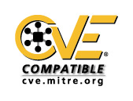

 –°–æ–≤–º–µ—Å—Ç–∏–º–æ—Å—Ç—å Debian –∏ CVE
–†–∞–∑—Ä–∞–±–æ—Ç—á–∏–∫–∏ Debian –æ—Å–æ–∑–Ω–∞—é—Ç –Ω–µ–æ–±—Ö–æ–¥–∏–º–æ—Å—Ç—å –ø—Ä–µ–¥–æ—Å—Ç–∞–≤–ª—è—Ç—å –∞–∫–∫—É—Ä–∞—Ç–Ω—É—é –∏ —Å–≤–æ–µ–≤—Ä–µ–º–µ–Ω–Ω—É—é –∏–Ω—Ñ–æ—Ä–º–∞—Ü–∏—é –æ –±–µ–∑–æ–ø–∞—Å–Ω–æ—Å—Ç–∏ –¥–∏—Å—Ç—Ä–∏–±—É—Ç–∏–≤–∞ Debian, –ø–æ–∑–≤–æ–ª—è—è –ø–æ–ª—å–∑–æ–≤–∞—Ç–µ–ª—è–º —Å–Ω–∏–∑–∏—Ç—å —Ä–∏—Å–∫, —Å–≤—è–∑–∞–Ω–Ω—ã–π —Å –æ–±–Ω–∞—Ä—É–∂–µ–Ω–∏–µ–º –Ω–æ–≤—ã—Ö —É—è–∑–≤–∏–º–æ—Å—Ç–µ–π. –ü—Ä–æ–µ–∫—Ç Common Vulnerabilities and Exposures (CVE) –¥–∞—ë—Ç –Ω–∞–º –≤–æ–∑–º–æ–∂–Ω–æ—Å—Ç—å –ø—Ä–µ–¥–æ—Å—Ç–∞–≤–ª—è—Ç—å —Å—Ç–∞–Ω–¥–∞—Ä—Ç–∏–∑–æ–≤–∞–Ω–Ω—ã–µ —Å—Å—ã–ª–∫–∏ –Ω–∞ –ø—Ä–æ–±–ª–µ–º—ã, —Å–≤—è–∑–∞–Ω–Ω—ã–µ —Å –±–µ–∑–æ–ø–∞—Å–Ω–æ—Å—Ç—å—é, –ø–æ–∑–≤–æ–ª—è—é—â–∏–µ –ø–æ–ª—å–∑–æ–≤–∞—Ç–µ–ª—è–º —Ä–∞–∑—Ä–∞–±–∞—Ç—ã–≤–∞—Ç—å —Å–æ–±—Å—Ç–≤–µ–Ω–Ω—ã–µ –ø—Ä–æ—Ü–µ–¥—É—Ä—ã –æ–±–µ—Å–ø–µ—á–µ–Ω–∏—è –±–µ–∑–æ–ø–∞—Å–Ω–æ—Å—Ç–∏ —Å –ø–æ–¥–¥–µ—Ä–∂–∫–æ–π CVE. CVE –ø—Ä–µ–¥–æ—Å—Ç–∞–≤–ª—è–µ—Ç —Å–ø–∏—Å–æ–∫ —Å—Ç–∞–Ω–¥–∞—Ä—Ç–∏–∑–æ–≤–∞–Ω–Ω—ã—Ö –∏–¥–µ–Ω—Ç–∏—Ñ–∏–∫–∞—Ç–æ—Ä–æ–≤ —É—è–∑–≤–∏–º—ã—Ö –º–µ—Å—Ç –∏ –ø—Ä–æ–±–ª–µ–º, —Å–≤—è–∑–∞–Ω–Ω—ã—Ö —Å –±–µ–∑–æ–ø–∞—Å–Ω–æ—Å—Ç—å—é.
–ü—Ä–æ–µ–∫—Ç Debian –ø–æ–ª–∞–≥–∞–µ—Ç, —á—Ç–æ –ø—Ä–µ–¥–æ—Å—Ç–∞–≤–ª–µ–Ω–∏–µ –ø–æ–ª—å–∑–æ–≤–∞—Ç–µ–ª—è–º –¥–æ–ø–æ–ª–Ω–∏—Ç–µ–ª—å–Ω–æ–π –∏–Ω—Ñ–æ—Ä–º–∞—Ü–∏–∏, —Å–≤—è–∑–∞–Ω–Ω–æ–π —Å –≤–æ–ø—Ä–æ—Å–∞–º–∏ –±–µ–∑–æ–ø–∞—Å–Ω–æ—Å—Ç–∏, –∑–∞—Ç—Ä–∞–≥–∏–≤–∞—é—â–∏–º–∏ –¥–∏—Å—Ç—Ä–∏–±—É—Ç–∏–≤ Debian, –∫—Ä–∞–π–Ω–µ –≤–∞–∂–Ω–æ. –í–∫–ª—é—á–µ–Ω–∏–µ –∏–¥–µ–Ω—Ç–∏—Ñ–∏–∫–∞—Ç–æ—Ä–æ–≤ CVE –≤ —Ç–µ–∫—Å—Ç—ã –Ω–∞—à–∏—Ö –ø—Ä–µ–¥–ª–æ–∂–µ–Ω–∏–π –ø–æ–º–æ–≥–∞–µ—Ç –ø–æ–ª—å–∑–æ–≤–∞—Ç–µ–ª—è–º —Å–æ–ø–æ—Å—Ç–∞–≤–ª—è—Ç—å –æ–±—â–∏–µ —É—è–∑–≤–∏–º–æ—Å—Ç–∏ —Å –∫–æ–Ω–∫—Ä–µ—Ç–Ω—ã–º–∏ –æ–±–Ω–æ–≤–ª–µ–Ω–∏—è–º–∏ Debian, —á—Ç–æ —É–º–µ–Ω—å—à–∞–µ—Ç –≤—Ä–µ–º—è, –Ω–µ–æ–±—Ö–æ–¥–∏–º–æ–µ –¥–ª—è –∏—Å–ø—Ä–∞–≤–ª–µ–Ω–∏—è –æ—à–∏–±–æ–∫, –∑–∞—Ç—Ä–∞—á–∏–≤–∞–µ–º–æ–µ –Ω–∞—à–∏–º–∏ –ø–æ–ª—å–∑–æ–≤–∞—Ç–µ–ª—è–º–∏.
–ù–∞–ª–∏—á–∏–µ –µ–¥–∏–Ω–æ–æ–±—Ä–∞–∑–Ω—ã—Ö —Å—Å—ã–ª–æ–∫ –Ω–∞ –ø—Ä–æ–±–ª–µ–º—ã, —Å–≤—è–∑–∞–Ω–Ω—ã–µ —Å –±–µ–∑–æ–ø–∞—Å–Ω–æ—Å—Ç—å—é, –æ–±–ª–µ–≥—á–∞–µ—Ç —Ç–∞–∫–∂–µ –æ–±–µ—Å–ø–µ—á–µ–Ω–∏–µ –±–µ–∑–æ–ø–∞—Å–Ω–æ—Å—Ç–∏ –≤ —Å—Ä–µ–¥–µ, –≥–¥–µ –∑–∞–¥–µ–π—Å—Ç–≤–æ–≤–∞–Ω—ã –∏–Ω—Å—Ç—Ä—É–º–µ–Ω—Ç—ã —Å –ø–æ–¥–¥–µ—Ä–∂–∫–æ–π CVE, —Ç–∞–∫–∏–µ –∫–∞–∫ —Å–∏—Å—Ç–µ–º—ã –æ–±–Ω–∞—Ä—É–∂–µ–Ω–∏—è –≤—Ç–æ—Ä–∂–µ–Ω–∏—è –≤ —Å–µ—Ç—å –∏–ª–∏ –Ω–∞ —É–∑–µ–ª –∏–ª–∏ –∏–Ω—Å—Ç—Ä—É–º–µ–Ω—Ç—ã –æ—Ü–µ–Ω–∫–∏ —É—è–∑–≤–∏–º–æ—Å—Ç–∏, –Ω–µ–∑–∞–≤–∏—Å–∏–º–æ –æ—Ç —Ç–æ–≥–æ, –æ—Å–Ω–æ–≤–∞–Ω—ã –æ–Ω–∏ –∏–ª–∏ –Ω–µ—Ç –Ω–∞ –¥–∏—Å—Ç—Ä–∏–±—É—Ç–∏–≤–µ Debian.
–ü—Ä–æ–µ–∫—Ç Debian –¥–æ–±–∞–≤–∏–ª –∏–¥–µ–Ω—Ç–∏—Ñ–∏–∫–∞—Ç–æ—Ä—ã CVE –≤–æ –≤—Å–µ –ø—Ä–µ–¥–ª–æ–∂–µ–Ω–∏—è –ø–æ –±–µ–∑–æ–ø–∞—Å–Ω–æ—Å—Ç–∏ (DSA), –≤—ã–ø—É—â–µ–Ω–Ω—ã–µ —Å —Å–µ–Ω—Ç—è–±—Ä—è 1998, –≤ —Ö–æ–¥–µ –ø—Ä–æ—Ü–µ—Å—Å–∞ —Ä–µ–≤–∏–∑–∏–∏, –Ω–∞—á–∞—Ç–æ–≥–æ –≤ –∞–≤–≥—É—Å—Ç–µ 2002. –í—Å–µ –ø—Ä–µ–¥–ª–æ–∂–µ–Ω–∏—è –º–æ–≥—É—Ç –±—ã—Ç—å –∑–∞–≥—Ä—É–∂–µ–Ω—ã —Å web-—Å–∞–π—Ç–∞ Debian, –∞ –∞–Ω–æ–Ω—Å—ã, —Å–≤—è–∑–∞–Ω–Ω—ã–µ —Å –Ω–æ–≤—ã–º–∏ —É—è–∑–≤–∏–º–æ—Å—Ç—è–º–∏, –≤–∫–ª—é—á–∞—é—Ç –∏–¥–µ–Ω—Ç–∏—Ñ–∏–∫–∞—Ç–æ—Ä—ã CVE —É–∂–µ –≤ –º–æ–º–µ–Ω—Ç –≤—ã–ø—É—Å–∫–∞.
–¢—Ä–µ–∫–µ—Ä –±–µ–∑–æ–ø–∞—Å–Ω–æ—Å—Ç–∏ Debian (Debian Security Tracker) —Å–æ–¥–µ—Ä–∂–∏—Ç –∫–∞–Ω–æ–Ω–∏—á–µ—Å–∫–∏–π —Å–ø–∏—Å–æ–∫ –∏–¥–µ–Ω—Ç–∏—Ñ–∏–∫–∞—Ç–æ—Ä–æ–≤ CVE, —Å–æ–æ—Ç–≤–µ—Ç—Å—Ç–≤—É—é—â–∏—Ö –ø–∞–∫–µ—Ç–∞–º Debian, —Ä–µ–∫–æ–º–µ–Ω–¥–∞—Ü–∏—è–º Debian –ø–æ –±–µ–∑–æ–ø–∞—Å–Ω–æ—Å—Ç–∏ –∏ –Ω–æ–º–µ—Ä–∞–º –æ—à–∏–±–æ–∫. –û–Ω –ø–æ–∑–≤–æ–ª—è–µ—Ç –≤—ã–ø–æ–ª–Ω—è—Ç—å –ø–æ–∏—Å–∫ –ø–æ –∏–º–µ–Ω–∏ –ø–∞–∫–µ—Ç–∞ –∏–ª–∏ –∏–¥–µ–Ω—Ç–∏—Ñ–∏–∫–∞—Ç–æ—Ä—É DSA/CVE –∏ —Å–æ–¥–µ—Ä–∂–∏—Ç –¥–∞–Ω–Ω—ã–µ –Ω–∞—á–∏–Ω–∞—è —Å –≤—ã–ø—É—Å–∫–∞ Debian Woody.
–î–ª—è –ø–æ–ª—É—á–µ–Ω–∏—è –±–æ–ª–µ–µ —Å—Ç–∞—Ä—ã—Ö –¥–∞–Ω–Ω—ã—Ö –≤—ã –º–æ–∂–µ—Ç–µ –∏—Å–ø–æ–ª—å–∑–æ–≤–∞—Ç—å –ø–æ–∏—Å–∫ –∏–ª–∏ –æ–±—Ä–∞—Ç–∏—Ç—å—Å—è –∫ —Ç–∞–±–ª–∏—Ü–µ –ø–µ—Ä–µ–∫—Ä—ë—Å—Ç–Ω—ã—Ö —Å—Å—ã–ª–æ–∫, –≤–∫–ª—é—á–∞—é—â–µ–π –≤—Å–µ —Å—Å—ã–ª–∫–∏ –¥–ª—è –≤—Å–µ—Ö —Ä–µ–∫–æ–º–µ–Ω–¥–∞—Ü–∏–π, –æ–ø—É–±–ª–∏–∫–æ–≤–∞–Ω–Ω—ã—Ö —Å 1997 –≥–æ–¥–∞. –≠—Ç–∞ —Ç–∞–±–ª–∏—Ü–∞ –¥–æ–ª–∂–Ω–∞ –¥–æ–ø–æ–ª–Ω—è—Ç—å –∫–∞—Ä—Ç—É —Å—Å—ã–ª–æ–∫, –¥–æ—Å—Ç—É–ø–Ω—É—é –Ω–∞ CVE.
–û–±—â–∏–µ –≤–æ–ø—Ä–æ—Å—ã –æ —Å–æ—Å—Ç–æ—è–Ω–∏–∏ CVE
- –ö–∞–∫–æ–≤ —Ç–µ–∫—É—â–∏–π —Å—Ç–∞—Ç—É—Å Debian –≤ –ø—Ä–æ—Ü–µ—Å—Å–µ CVE?
- –ü–æ—á–µ–º—É —è –Ω–µ –º–æ–≥—É –Ω–∞–π—Ç–∏ –Ω–µ–æ–±—Ö–æ–¥–∏–º—ã–π –∏–¥–µ–Ω—Ç–∏—Ñ–∏–∫–∞—Ç–æ—Ä CVE?
- –ì–¥–µ —è –º–æ–≥—É –Ω–∞–π—Ç–∏ –±–æ–ª–µ–µ –ø–æ–¥—Ä–æ–±–Ω—É—é –∏–Ω—Ñ–æ—Ä–º–∞—Ü–∏—é?
–í–æ–ø—Ä–æ—Å: –ö–∞–∫–æ–≤ —Ç–µ–∫—É—â–∏–π —Å—Ç–∞—Ç—É—Å Debian –≤ –ø—Ä–æ—Ü–µ—Å—Å–µ CVE?
–ü—Ä–µ–¥–ª–æ–∂–µ–Ω–∏—è Debian –ø–æ –±–µ–∑–æ–ø–∞—Å–Ω–æ—Å—Ç–∏ (Debian Security Advisories) –æ–±—ä—è–≤–ª–µ–Ω—ã —Å–æ–≤–º–µ—Å—Ç–∏–º—ã–º–∏ —Å CVE (CVE-Compatible) 24 —Ñ–µ–≤—Ä–∞–ª—è 2004. –ë–æ–ª–µ–µ –ø–æ–¥—Ä–æ–±–Ω–∞—è –∏–Ω—Ñ–æ—Ä–º–∞—Ü–∏—è –¥–æ—Å—Ç—É–ø–Ω–∞ –Ω–∞ —Å–∞–π—Ç–µ CVE, –≤ —Ç–æ–º —á–∏—Å–ª–µ –æ–ø—Ä–æ—Å–Ω–∏–∫ –ø–æ –≤–æ–∑–º–æ–∂–Ω–æ—Å—Ç—è–º.
{kind=link}
–¢—Ä–µ–∫–µ—Ä –±–µ–∑–æ–ø–∞—Å–Ω–æ—Å—Ç–∏ –¥–æ–ª–∂–µ–Ω —Å–æ–¥–µ—Ä–∂–∞—Ç—å –≤—Å–µ –∏–¥–µ–Ω—Ç–∏—Ñ–∏–∫–∞—Ç–æ—Ä—ã CVE. –í –¥—Ä—É–≥–∏—Ö —Å–ø–∏—Å–∫–∞— –≤—ã –º–æ–∂–µ—Ç–µ –Ω–µ –Ω–∞–π—Ç–∏ –∑–∞–¥–∞–Ω–Ω–æ–≥–æ –∏–¥–µ–Ω—Ç–∏—Ñ–∏–∫–∞—Ç–æ—Ä–∞ CVE –ø–æ –æ–¥–Ω–æ–π –∏–∑ —Å–ª–µ–¥—É—é—â–∏—Ö –ø—Ä–∏—á–∏–Ω:
- –ü—Ä–æ–¥—É–∫—Ç—ã Debian –Ω–µ –∑–∞—Ç—Ä–æ–Ω—É—Ç—ã —ç—Ç–æ–π —É—è–∑–≤–∏–º–æ—Å—Ç—å—é.
- –ü–æ–∫–∞ –µ—â—ë –Ω–µ—Ç –ø—Ä–µ–¥–ª–æ–∂–µ–Ω–∏—è, –æ–ø–∏—Å—ã–≤–∞—é—â–µ–≥–æ —ç—Ç—É —É—è–∑–≤–∏–º–æ—Å—Ç—å.
- –ü—Ä–µ–¥–ª–æ–∂–µ–Ω–∏–µ –±—ã–ª–æ –æ–ø—É–±–ª–∏–∫–æ–≤–∞–Ω–æ –¥–æ —Ç–æ–≥–æ, –∫–∞–∫ —É—è–∑–≤–∏–º–æ—Å—Ç–∏ –ø—Ä–∏—Å–≤–æ–µ–Ω –∏–¥–µ–Ω—Ç–∏—Ñ–∏–∫–∞—Ç–æ—Ä CVE.
–í–æ–ø—Ä–æ—Å: –ì–¥–µ —è –º–æ–≥—É –Ω–∞–π—Ç–∏ –±–æ–ª–µ–µ –ø–æ–¥—Ä–æ–±–Ω—É—é –∏–Ω—Ñ–æ—Ä–º–∞—Ü–∏—é?
–ë–æ–ª–µ–µ –ø–æ–¥—Ä–æ–±–Ω—É—é –∏–Ω—Ñ–æ—Ä–º–∞—Ü–∏—é –º–æ–∂–Ω–æ –Ω–∞–π—Ç–∏ –Ω–∞ web-—Å–∞–π—Ç–µ CVE.